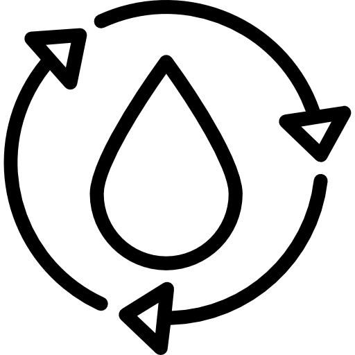

Como ter uma vida mais simples
Passos para ter uma vida simples
Simplificar
O primeiro passo é enxergar a beleza do simples
Organizar
Após simplificar é hora de colocar cada coisa no seu lugar!

Reutilizar
O primeiro passo é enxergar a beleza do simples

Reciclar
O primeiro passo é enxergar a beleza do simples